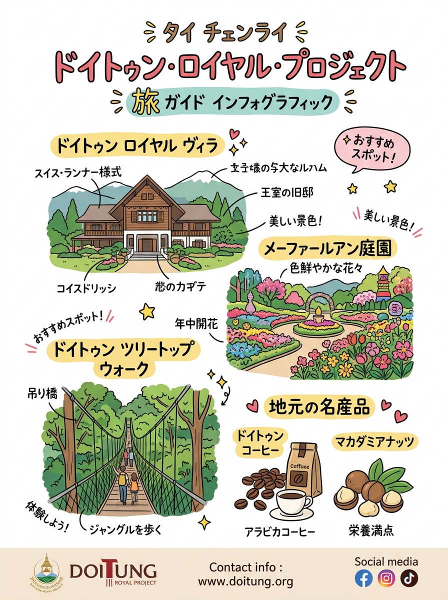
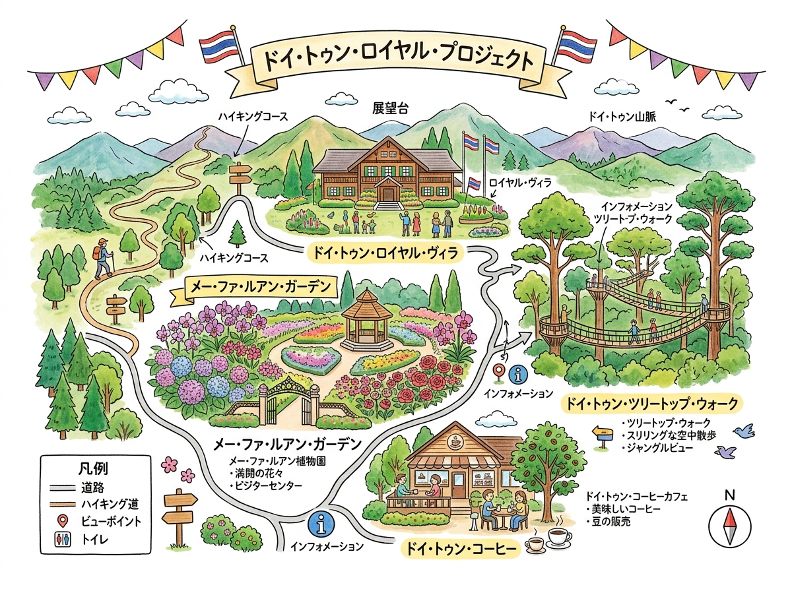

01
VISUAL GUIDE
インフォグラフィック・イラストガイド
クリックすると拡大して詳細を確認・印刷できます。

🔍 タップで拡大
A4 縦型
チェンライ県内の王室プロジェクト（ドイトゥン・ロイヤルヴィラ・庭園）完全ガイド（情報凝縮ポスター）
旅行者の持ち歩き・印刷に適した手書き風インフォグラフィック。

🔍 タップで拡大
A4 横型
周遊マップ ＆ 見開きガイド
位置関係やルート、全体像を俯瞰できるワイドデザイン。
DETAILED GUIDE & DATA
詳細ガイド ＆ データ一覧（全5件）
現地調査および公的データに基づく最新詳細情報。
02
メーファールアン庭園（สวนแม่ฟ้าหลวง）
03
インスピレーション・ホール（หอแห่งแรงบันดาลใจ）
04
メーファールアン・樹木園（ドイ・チャン・ムーブ / สวนรุกขชาติดอยช้างมูบ）
05